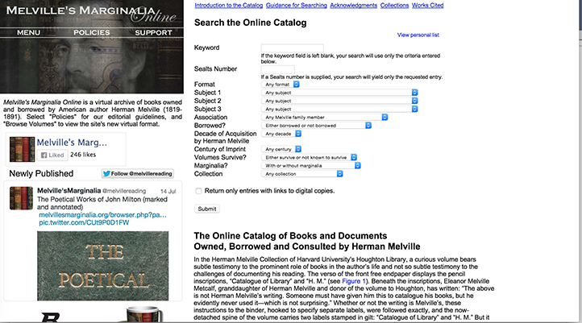
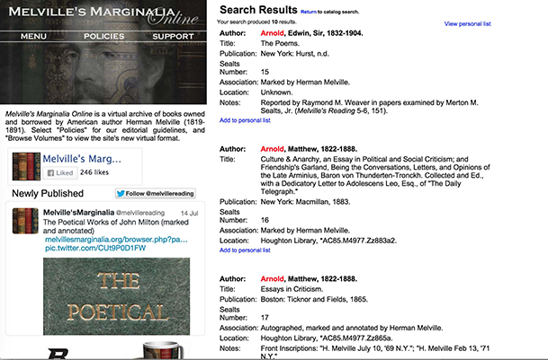
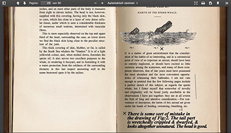
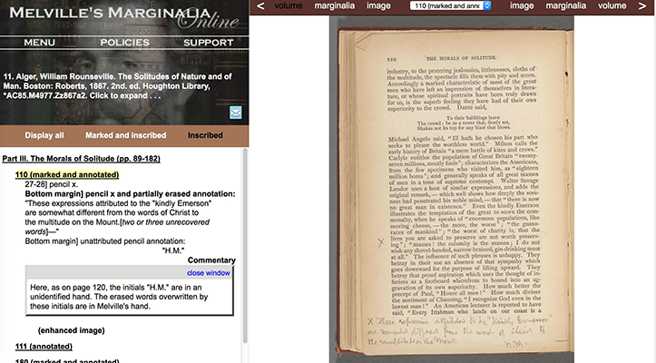
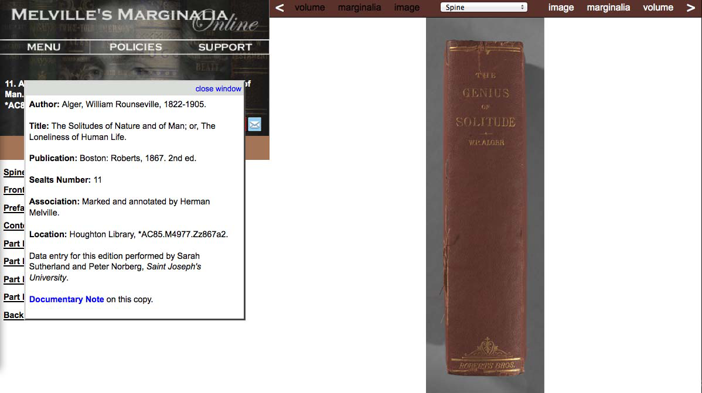
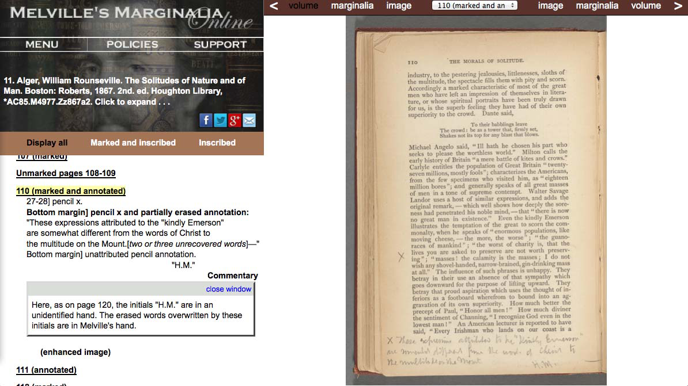
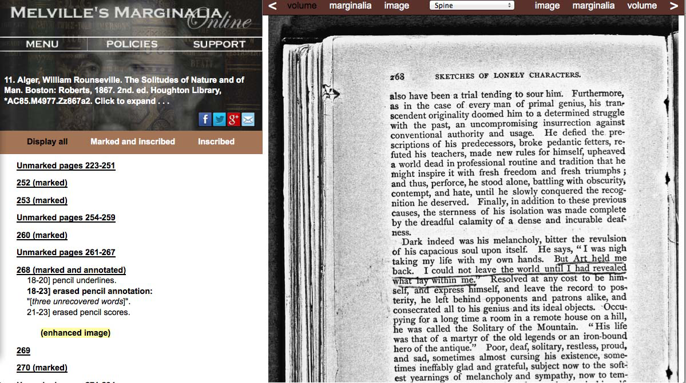

Melville’s Marginalia Online
Table of Contents
Abstract
This review discusses Melville's Marginalia Online, a digital edition and online catalogue of the private library of author Herman Melville. The project is one of the first to make (parts of) a writer's library digitally available for research. By synthesizing and augmenting existing studies of Melville's reading, MMO provides an original scholarly resource. As such, the site offers an insight into the intellectual environment and literary influences of Herman Melville. Improvements can be made in the way this scholarship is communicated to the user. Moreover, considering the novelty of this type of research in the digital environment, it would be valuable to expand upon the technical implementations, or to publish the XML-transcriptions of Melville's marginalia.
Introduction: A (Writer's) Private Library
NYBooks reviewer Tim Parks recently argued that reading with a pencil in hand helps to maintain a critical attitude towards the text. He suggested that a collection of marked pages in books could even become a ‘vehicle for self-knowledge’ (Parks 2014). This idea is far from new. The practice of marking books was already encouraged in the Renaissance. It was considered a useful reading aid that allowed the reader a better comprehension of a given text (cf. Hooks 2012, 636; Blair 2003, 11). And if the reader is an especially active annotator, a book’s margins might display an almost intimate conversation between a text and its reader.
The private library of a writer is particularly interesting in this respect. It is a place in which a book-to-be interacts with existing texts; it forms a ‘network of texts in which books by other writers and the former owner’s own work are in some sense in dialogue with one another’ (Nicholson 109). The notes and scribbles in the margin can present a fascinating perspective on the dynamics between reading and writing. These notes and scribbles are commonly referred to as ‘marginalia’ and are the first traces of what John Bryant calls ‘the moment of artistic creation’ (Bryant 1991, 5). They illustrate how a certain phrase from a literary work can have its origin in the margin of another book. But even if the books bear no markings whatsoever it is interesting to see which literary works constituted the literary environment of an author. The library of a writer illustrates his or her literary preferences, reading practices, and work methods. As such, engaging with a writer’s private library can be a fruitful approach in textual and literary studies.
To be sure, not any writer’s library would provide such a fascinating research subject. But for the autodidact Herman Melville reading served as ‘the means and impetus for his phenomenal literary achievements’ (Olsen-Smith, Norberg and Marnon 2008a). Reading played a major role in his life and he was ‘extraordinarily responsive to literary influence’ (idem). Since Melville was an active annotator, his marginalia indeed illustrate his interaction with prevalent discourse. For instance, some of the lines he jotted down in the margins of Thomas Beale’s The Natural History of the Sperm Whale find their way – in a slightly revised version – into Moby Dick. This beautifully demonstrates the genesis of a literary work and the careful and intensive study underlying it. In short, a study of Melville’s books and their annotations can provide us with a deeper understanding of his thoughts and writings.
Challenges
The study of a writer’s private library and the creation of editions making use of a writer’s library raise a number of issues. First, what constitutes the private library: all books a writer owned or those he arguably read? For instance, a scholarly edition could be enriched with (references to) the books a writer has read. But which works from the library would provide interesting insides for the edited literary work? In his notable article Bibliothèques réelles et bibliothèques virtuelles (Ferrer 2010), Ferrer distinguishes between ‘virtual’ and ‘real’ libraries. A virtual library is a record of the works that were once used by the writer, even if they are now lost. It is a list of bibliographical entries, constructed on the basis of information such as personal journals, correspondence, and library records. A real or extant library is the ensemble of surviving volumes, possession of which can be attributed to a writer. Since extant and virtual libraries overlap and complement each other, it transpires that the most complete approach would be a combination of both.
Another challenge is how to demonstrate the relationships between the texts read and the texts written. Rendering the complex relationships between texts might seem to be a simple case of web design or data visualisation. In fact, however, the issue is more complicated. For although every physical feature of a text and its marginalia can now be represented in great detail by means of high quality scans, it is difficult to capture the tentativeness of possible textual links; ideally one would like to show to what extent the links are suggestions or interpretations of the editor, and to what degree. (A print edition, it would seem, would only allow for bibliographical references, but not for the inclusion of any of the actual texts, in whole or in part, assuming that a writer usually reads a great amount of literature.)
To sum up, the two principal challenges for this type of research are to establish the writer’s libraries (virtual and real) and to link these to his or her own texts. Moreover, the nuanced complexities of the textual links need to be sufficiently represented in a digital infrastructure and user interface. Since digital research into this field is relatively new and lacks a specialised methodology, the practice of projects such as Melville’s Marginalia Online (from here on referred to as ‘MMO’) is all the more interesting. The MMO-project aims to address the challenges outlined above with an online catalogue of the books owned, borrowed or consulted by Herman Melville, and a ‘Digital Edition’ with digital reproductions of some of the surviving copies with his annotations.
Previous research
For both the online catalogue and the digital edition, MMO builds upon previous research. The online catalogue adopts Merton Sealts Jr.’s work Melville’s Reading: A Check-List of Books Owned and Borrowed, first published in 1948 and last updated in 1988 (Sealts Jr. 1988). This work includes a list of all the books owned, borrowed, or consulted by Herman Melville (Olsen-Smith, Norberg and Marnon 2008b). This ‘Sealts list’ is now augmented with other studies on the subject and updated with research carried out by the MMO project team. The Digital Edition consists of digital reproductions of the surviving books and is based on the book Melville’s Marginalia by Wilson Walker Cowen (Cowen 1987). Cowen was the first to map Melville’s library books and their marginalia by reproducing every marked page from Melville’s private library.
By combining the information of Sealts’ catalogue with the research of Cowen, and augmenting the results with recent findings, the MMO project intends to offer a valuable resource for both Melville- as well as annotation-scholarship. The project aims to make the resulting information and knowledge accessible to a broad audience. Indeed, a synthesis of Cowen’s research and the Sealts’ list can teach us many things about the ways in which Melville’s reading material influenced his writing. Nevertheless, retracing his reading activities is not an easy task and subject to a certain level of uncertainty. Even if a book can be traced back to Melville, it is not always certain whether it was owned by Melville himself or by another family member, like his wife or brother-in-law.
It should also be noted that, because the digitising of rare books often raises several (practical) difficulties, not all digital copies in the catalogue are in fact the ones owned by Melville. This is the case for instance with the famous copy of Beale’s The Natural History of the Sperm Whale. The Houghton library that holds Melville’s copy imposes several restrictions on handling sensitive material, which compelled the editors of the MMO to digitise a different copy (of the same edition) and subsequently simulate Melville's marginalia (Howard 2006). As a consequence, the digital facsimiles of Beale’s work are in truth reproductions of imitated marginalia. 1
The Website
Online Catalog
The catalogue can be considered as a combination of the virtual library and the extant library of Melville. It includes, first, the surviving copies of which a digital facsimile is available (either on the MMO-website itself or otherwise externally hosted); secondly, the surviving copies that can as of yet only be consulted in the institutions that hold them; and, thirdly, the copies not known to have survived. Moreover, the catalogue includes the works that have resurfaced since the last update of the Sealts’ list in 1988. The editors classify ‘only books and titles that can be linked to Herman Melville and his immediate family by documentary evidence’ (Olsen-Smith, Norberg and Marnon 2008a). This evidence can take the form of a Melville-autograph in the book, or the appearance of his family name in library records. However, it is not clear whether they base their decisions about including those recently emerged volumes on the criteria set by Sealts and Owen, or on their own standards.
The editors hope that by making the catalogue available online, more works that once went through Melville’s hands emerge from library or private collections (Olsen-Smith, Norberg and Marnon 2008b). The choice to build upon the findings of previous research ensured that the scope for Melville’s virtual and extant library was already determined. This allowed the editors to pass over the challenge of defining and reconstructing Melville’s virtual and extant library. They could proceed with complementing the existing research, and enhancing access to it through digital technology.
Search engine
It would seem that a well-functioning search engine is vital to the accessibility of any digital collection, especially in the case of a collection where small details such as a score in the margin of a book are of particular interest. The online catalogue combines Melville’s virtual and extant libraries by distinguishing the status of the books: users can search for all books associated with Melville, or only those known to have survived.


The advanced search engine of MMO is particularly beneficial for the researchers that already have a sense of what the collection entails and wish to search for particular works with specific characteristics. Users that wish to discover the hidden gems in this collection might be better off browsing the catalogue.
Nevertheless, the content of MMO could benefit from a better search engine. A faceted search3 would help users to narrow down the content of the collection. Similarly, an auto-complete function could give users suggestions about the content of the edition, without necessarily limiting their query as the parameters currently do. Another possible improvement of the search engine could be a simple search field that allows both simple and advanced queries.
Digital Edition
The digital reproductions of the surviving copies constitute what the MMO-project calls the ‘Digital Edition’. The editorial commentary alongside the transcription is limited to the textual properties and does not concern the material conditions of the work.4 Additionally, the editors aim to supply every copy with a critical introduction or essay on the marginalia, written by one of the editors or occasionally by a contributing scholar.5 This commentary also points out any connection between the content of a book, its marginalia, and a text written by Melville. In other words, the intertextual relationships between marginalia and literary text are not visualised; rather a user should alternate between reading the accompanying essay and the facsimile of the concerning copy.

Although it is indeed fascinating to inspect Melville’s scribbled notes in the margin of a book, this feature deserves at least two points of criticism. First, as I said earlier, it is not clearly indicated which facsimiles are imitations by the editors and which are of Melville himself. Secondly, the current presentation follows to a great extent the design and approach of a printed edition and does not take much advantage of the possibilities of the digital medium. The site could benefit from, for instance, a simple visualisation of the textual connections or the possibility to easily jump between different texts. Even though the number of available digital copies is limited, such an approach would give users a glimpse of the processes of reading and writing. The fact that some annotations are already encoded with a link implies that more progress in that area is easily possible. Although it is indeed fascinating to inspect Melville’s scribbled notes in the margin of a book, this feature deserves a point of criticism. The current presentation follows to a great extent the design and approach of a printed edition and does not take much advantage of the possibilities of the digital medium. The site could benefit from, for instance, a simple visualization of the textual connections or the possibility to easily jump between different texts. Even though the number of available digital facsimiles is limited, such an approach would give users a glimpse of the processes of reading and writing. The fact that some annotations are already encoded with a link implies that more progress in that area is easily possible. 8


Browsing a work


Technical implementation
The introductions to the catalogue and the digital edition form an exhaustive editorial justification that allows the user to gain full advantage of the wealth of information. Considering the pioneer status of the project however, a section on the technical implementations would be a welcome addition to the webpage. Most probably the encoding of the material presents enough dilemmas and challenges of its own. Unfortunately the editors provide little to no information about technical matters, neither the technical implementation of the website nor the underlying framework. A quick look at the HTML-code of a page suggests that the project encodes the marginalia in XML, and an associate-editor informed me that the marginalia are encoded according to the TEI Guidelines. Unfortunately, neither the XML-file nor other underlying raw data are available to the public.
It is a shame that the project is not more open about its technical infrastructure and approach, especially in view of their scientific objectives. If we consider that transcribing a text in TEI - XML is a critical act, the XML-transcription is an argument in itself and therefore of interest for researchers. If the XML-transcription is not available for the public, the argument – and consequently the scholarship – cannot be consulted or verified.
Conclusion
Sometimes a project or enterprise seems so obvious that one is surprised it did not yet exist. This is also the case with MMO. The project’s undertaking – to digitise and update the existing catalogue and combine it with a digital edition of the available works – seems a logical and evident step. Some impressive studies into Melville’s reading activities exist already, and the available material is suited for different types of research.
As a consequence, the concept of Melville’s Marginalia Online is fascinating and of great interest for academia, and it is worth insisting upon the non-profit, long-term status of the project. The project’s objectives are promising and it would be a pity if they were not realised to their full potential. The editors welcome different kinds of support, financial as well as intellectual. Despite some apparent economical struggles, it does not seem the web edition will suffer a premature death any time soon: a new digital copy including critical introduction and PDFs was published quite recently. As a consequence, the concept of Melville’s Marginalia Online is fascinating and of great interest for academia, and it is worth insisting upon the non-profit, long-term status of the project. The project’s objectives are promising and it would be a pity if they were not realized to their full potential. The editors welcome different kinds of support, financial as well as intellectual. Despite some apparent economical struggles, it does not seem the web edition will suffer a premature death any time soon: new digital copies and critical introductions are published on a regular basis. 10
Although MMO depends partly on contributions from scholars and (under)graduate interns, the project does not make use of crowd sourcing for adding metadata or transcribing text. It is possible that their search for scholarly contributions is also an attempt to engage the community of Melville specialists. If successful, it would certainly enhance the edition’s academic credentials and promote its function as platform for academic dialogue.
A serious improvement would be the addition of a section on the technical implementations, preferably with access to the XML-encoding. By combining the scholarship of two major works on Melville and making them digitally available, MMO offers an original contribution to existing knowledge that is valuable scholarship in itself. However, the way this scholarship is communicated to the user leaves much to be desired. For a project that emphasises its scholarly intentions and aims to promote research in annotations through digital technology, this is a significant shortcoming.
The exhaustive editorial prefaces might help to ensure that users are aware of all the visualisation, but would be less urgent if the visualisations and the search engine were improved. At the same time, the editorial justification is not only interesting for textual scholars and a handful of Melville devotees. While describing their challenges and dilemmas, the editors sketch out the scope and the history of a collection that touches upon Melville’s work, his life, and that of his family and close acquaintances. The same goes for the critical introductions of the digital copies. The history and origin of a work that was once read by Herman Melville, and how he used it as a source for his own writings, are interesting even for those not familiar with textual genealogy.
Bibliography
- Bennett, Mark. ‘Parametric Search, Faceted Search, and Taxonomies.’ New Idea Engineering 2.6 (2005). Accessed 16.07.2015. http://www.ideaeng.com/parametric-facet-taxonomy-0206.
- Blair, Ann. ‘Reading strategies for coping with information overload, ca. 1550-1700.’ Journal of the History of Ideas, 64.1 (2003): 11-28.
- Bryant, John. ‘Melville's "Typee" Manuscript and the Limits of Historicism.’ Modern Language Studies, 21.2 (1991): 3-10.
- Bryant, John. The Fluid Text: A Theory of Revision and Editing for Book and Screen.Ann Arbor: University of Michigan Press, 2002.
- Cowen, Wilson Walker. Melville's Marginalia. New York: Garland, 1987.
- Ferrer, Daniel. ‘Introduction.’ In Bibliothèque d'écrivains, edited by Elisabeth Décultot, Paolo D'Ioro and Daniël Ferrer. Paris: CNRS Editions, 2001.
- Ferrer, Daniel. ‘Bibliothèques réelles et bibliothèques virtuelles.’ QUARTO. Zeitschrift des Schweizerischen Literaturarchivs, 30.31 "Autorenbibliotheken" (2010): 15-18.
- Hooks, Adam G. ‘Marginalia.’ The Encyclopedia of English Renaissance Literature, edited by Garret A. Sullivan, Jr. and Alan Stewart. London: Wiley-Blackwell, 2012.
- Howard, Jennifer. ‘Call Me Digital.’ Chronicle of Higher Education, 52.24 (2006): 14-19.
- Nicholson, Joseph R. ‘Making Personal Libraries More Public: A Study of the Technical Processing of Personal Libraries in ARL Institutions.’ RBM. A Journal of Rare Books, Manuscripts, and Cultural Heritage, 11.2 (2010): 106-133.
- Olsen-Smith, Steven, Peter Norberg and Dennis C. Marnon. Online Catalog of Books and Documents Owned, Borrowed and Consulted by Herman Melville, 2008a. http://web.archive.org/web/20140805084911/http://melvillesmarginalia.org/m.php?p=userinterface_new.
- Olsen-Smith, Steven, Peter Norberg and Dennis C. Marnon. Purpose and Scope of Melville's Marginalia Online, 2008b. http://web.archive.org/web/20140805090657/http://melvillesmarginalia.org/m.php?p=policies.
- Sealts Jr., Merton M. Melville's Reading: A Check-listBibl of Books Owned and Borrowed. Cambridge: Massachusetts, 1988.
- Tanselle, G. Thomas. ‘Critical Editions, Hypertexts, and Genetic Criticism.’ The Romantic Review, 86.3 (1995): 581-93.
- Wilksinson, Jessica L. ‘"Out of Bounds of the Bound Margin": Susan Howe Meets Mangan in Melville's Marginalia.’ Criticism, 53.2 (2011): 265-294.
- Yothers, Brian. ‘Introduction to Melville's Marginalia in The New Testament and The Book of Psalms’. Melville's Marginalia Online, Steven Olsen-Smith, Peter Norberg, and Dennis C. Marnon. http://web.archive.org/web/20140805121159/http://melvillesmarginalia.org/UserViewFramesetIntro.php?id=14.
Notes
- Amendment note of reviewer: ‘Originally, the MMO presented only PDF files of surrogate copies, but as from 2010 they also offer high-resolution photo reproductions of the original copy of Melville. Any bibliographical entry that linked to a PDF copy is now also linked to a digital facsimile of the original. This applies currently to five entries’. ↑
- Amendment note of reviewer: ‘Every bibliographical entry in the Online Catalog that is associated with a digital copy is linked to a digital facsimile of Melville’s original book. In the latter, it is possible to see the erased marginalia of Herman Melville, which have been recovered by MMO’. ↑
- With a faceted search, or ‘guided navigation’, users can narrow down the scope of their search query by applying multiple filters while the results are displayed. A faceted search engine functions as a navigation tool as well, because it helps to narrow down the scope of the collection. ↑
- Consider for instance the Introduction to Melville's Marginalia in Matthew Arnold's New Poems by Peter Norberg of Saint Joseph University. ↑
- At the time this review is written, MMO held about 29 digital works. If a copy is already part of the digital collection of a collaborating institution, MMO provides an external link to the specific copy on the institution’s website. Consequently, the presentation of these copies differs from the ones available on the project’s website. This review focuses on the digital copies as presented on MMO. ↑
- Amendment note of reviewer: Corrected in order to clarify that the image shows a digitial facsimile rather than a PDF with transcription. ↑
- Amendment note of reviewer: ‘The digital facsimile has distinctly different features than the PDF surrogate file’. ↑
- Amendment note of reviewer: The first point of criticism is no longer relevant, since the site does distinguish between a PDF surrogate and a digital facsimile of an original copy. The surrogate PDF can be accessed through “Introduction and PDF”; the original copy can be accessed through “Digital Copy”. ↑
- In his copy of Beale’s The Natural History of the Sperm Whale for instance, Melville notes in the margin ‘what Vidocq in his "Memoirs" calls w[andering friar]s’. In the commentary, the editors explain that ‘the conjectural reading of "w[andering friar]s" here is based in part on the episode Memoirs of Vidocq to which Melville alludes, where in disguise as a wandering friar the fugitive title-character finds work as a schoolmaster in a rural parish’. They then suggest which edition and volume of Vidocq's work Melville probably consulted. ↑
- Amendment note of reviewer: ‘From 2010 onwards, the MMO project no longer publishes PDF surrogates. New contributions to the edition only link to a digital facsimile of the original copy of Melville – if applicable’. ↑
@article{melville,
author = {Bleeker, Elli},
title = {Melville’s Marginalia Online},
journal = {RIDE – A review journal for digital editions and resources},
number = {3},
year = {2015},
doi = {10.18716/ride.a.3.1},
url = {https://doi.org/10.18716/ride.a.3.1},
}TY - JOUR
AU - Bleeker, Elli
TI - Melville’s Marginalia Online
T2 - RIDE – A review journal for digital editions and resources
IS - 3
PY - 2015
DA - 2015/11
DO - 10.18716/ride.a.3.1
UR - https://doi.org/10.18716/ride.a.3.1
PB - Institut für Dokumentologie und Editorik e.V.
LA - en
ER - Bleeker, E. (2015). Melville’s Marginalia Online. RIDE – A review journal for digital editions and resources, (3). https://doi.org/10.18716/ride.a.3.1Bleeker, Elli. "Melville’s Marginalia Online." RIDE – A review journal for digital editions and resources, no. 3, 2015. https://doi.org/10.18716/ride.a.3.1.Bleeker, Elli. "Melville’s Marginalia Online." RIDE – A review journal for digital editions and resources, no. 3 (2015). https://doi.org/10.18716/ride.a.3.1.